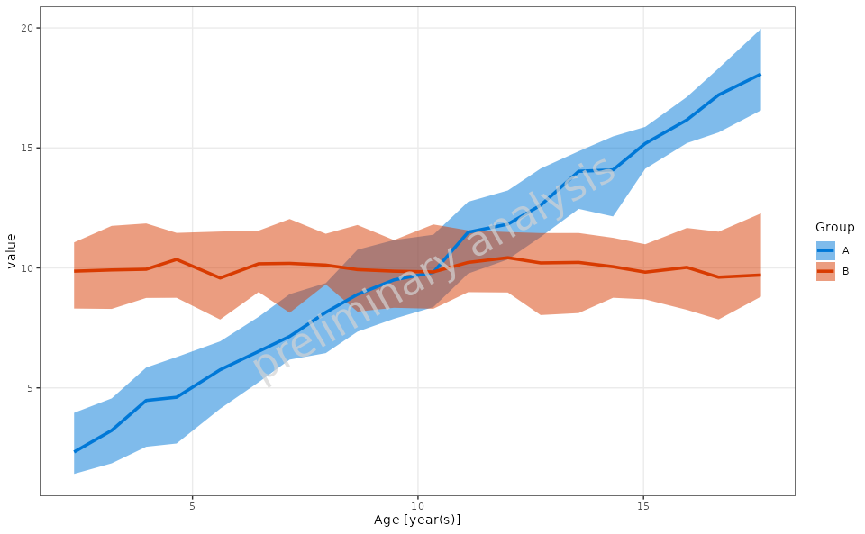
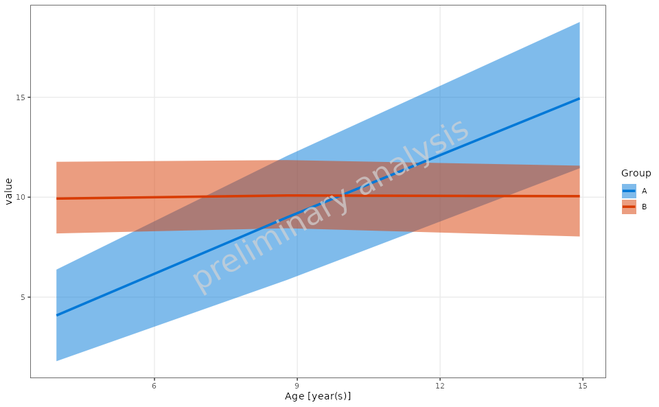
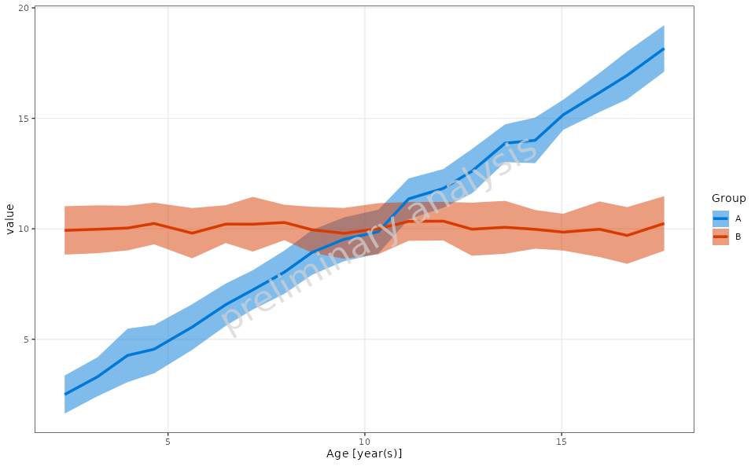
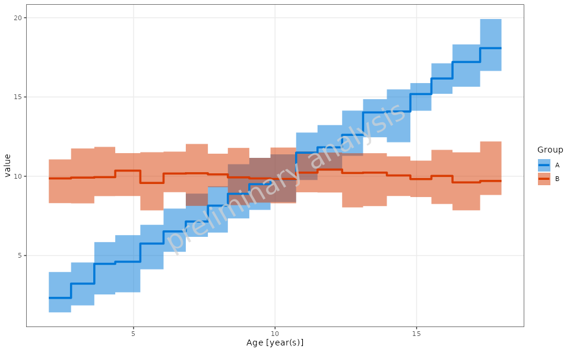

Range Plot Visualization
range-plot-visualization.Rmd1. Introduction
This vignette documents and illustrates workflows for creating range
plots using the function plotRangeDistribution from the
ospsuite.plots package. Range plots are useful for
visualizing data distributions over specified ranges, allowing for
different binning strategies and statistical summaries.
1.1 Setup
This vignette uses the ospsuite.plots and
tidyr libraries. We will also utilize the
ggplot2 package for plotting.
options(rmarkdown.html_vignette.check_title = FALSE)
# Set watermark option required for ospsuite.plots functionality
options(ospsuite.plots.watermark_enabled = TRUE)
library(ospsuite.plots)
#> Loading required package: ggplot2
library(tidyr)
library(data.table)
library(ggplot2)
# Set Defaults
oldDefaults <- setDefaults()1.2 Example Data
This vignette uses a simulated dataset to demonstrate the
functionality of the plotRangeDistribution function. The
dataset includes individual identifiers, the age of the individual, a
numeric variable representing measurements, and a categorical variable
indicating group membership.
# Simulating example data
set.seed(123)
n <- 1000
exampleData <- data.table(
IndividualId = 1:n,
Age = runif(n = n, min = 2, max = 18),
Group = sample(c("A", "B"), n, replace = TRUE)
)
exampleData[, value := rnorm(n) + ifelse(Group == "A", Age, 10)]
metaData <- list(Age = list(
dimension = "Age",
unit = "year(s)"
))
# Display the first few rows of the example data
head(exampleData)IndividualId Age Group value
2. Binning Methods
The plotRangeDistribution function supports the
following binning methods:
- Equal Frequency Binning: Divides the data into bins that contain approximately the same number of observations.
- Equal Width Binning: Divides the data into bins of equal width.
- Custom Binning: Allows the user to specify custom breaks for binning.
3. Continuous vs. Step Function Plot Types
The plotRangeDistribution function allows for two types
of plots: continuous and step
function.
Continuous Plot: This type of plot displays a smooth line connecting the statistical summaries. It is useful for visualizing trends in the data over the specified range and provides a clear representation of the overall distribution.
Step Function Plot: This type of plot presents the data as steps between points rather than a continuous line. This is particularly useful when the data has discrete changes and allows for a clearer representation of the underlying data points. It emphasizes the differences between adjacent values and can help highlight specific changes in the data distribution.
4. Generating Range Plots
4.1 Basic Range Plot
In this example, we will create a basic range plot to visualize the
distribution of the Value variable across different
groups.
plotObject <- plotRangeDistribution(
data = exampleData,
mapping = aes(x = Age, y = value, groupby = Group),
modeOfBinning = BINNINGMODE$number,
numberOfBins = 20,
statFun = NULL,
percentiles = c(0.05, 0.5, 0.95),
metaData = metaData
)
print(plotObject)
4.2 Range Plot with Custom Binning
In this example, we will create a range plot using custom binning breaks.
customBreaks <- c(2, 6, 12, 18)
plotObject <- plotRangeDistribution(
data = exampleData,
mapping = aes(x = Age, y = value, groupby = Group),
modeOfBinning = BINNINGMODE$breaks,
breaks = customBreaks,
statFun = NULL,
percentiles = c(0.05, 0.5, 0.95),
metaData = metaData
)
print(plotObject)
4.3 Example of Custom Aggregation Function
In this example, we will define a custom aggregation function that
calculates the mean and standard deviation for the Value
variable and use it in the range plot.
customStatFun <- function(y) {
return(c(ymin = mean(y) - sd(y), y = mean(y), ymax = mean(y) + sd(y)))
}
plotObject <- plotRangeDistribution(
data = exampleData,
metaData = metaData,
mapping = aes(x = Age, y = value, groupby = Group),
modeOfBinning = BINNINGMODE$number,
numberOfBins = 20,
statFun = customStatFun,
percentiles = c(0.05, 0.5, 0.95)
)
print(plotObject)
4.4 Range Plot with Step Plot Option
In this example, we will create a range plot with the step plot option enabled.
plotObject <- plotRangeDistribution(
data = exampleData,
mapping = aes(x = Age, y = value, groupby = Group),
metaData = metaData,
modeOfBinning = BINNINGMODE$number,
numberOfBins = 20,
asStepPlot = TRUE,
statFun = NULL,
percentiles = c(0.05, 0.5, 0.95)
)
print(plotObject)